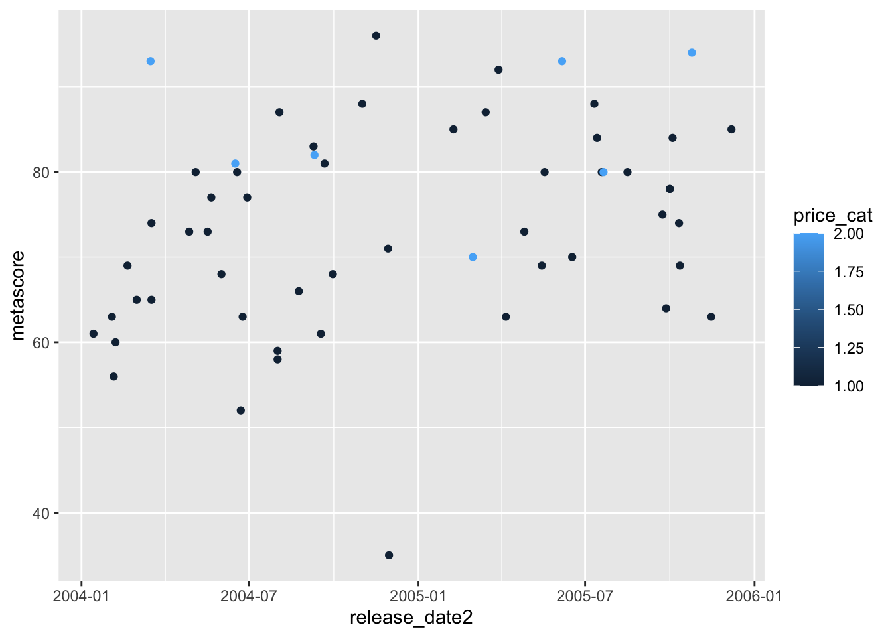
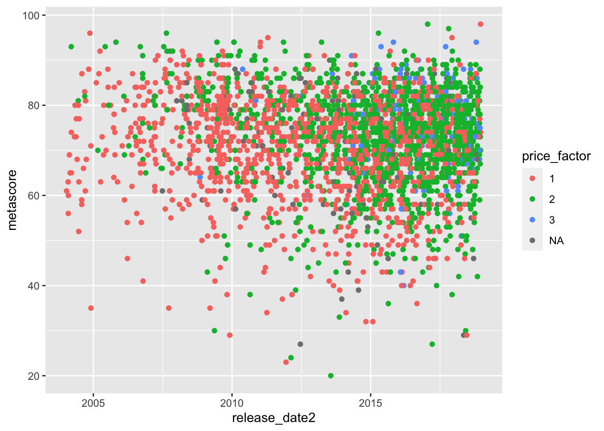
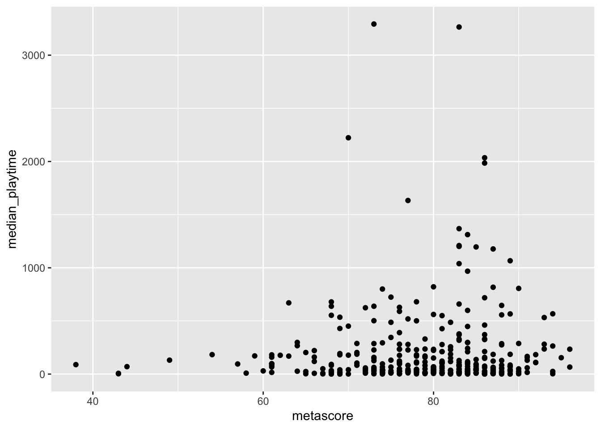
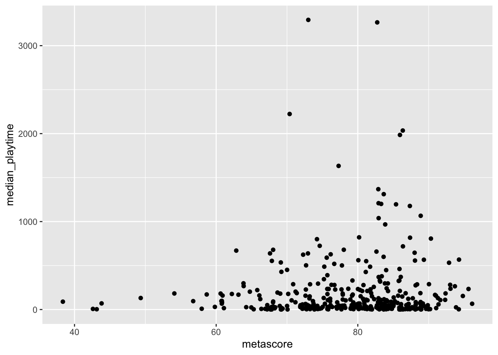
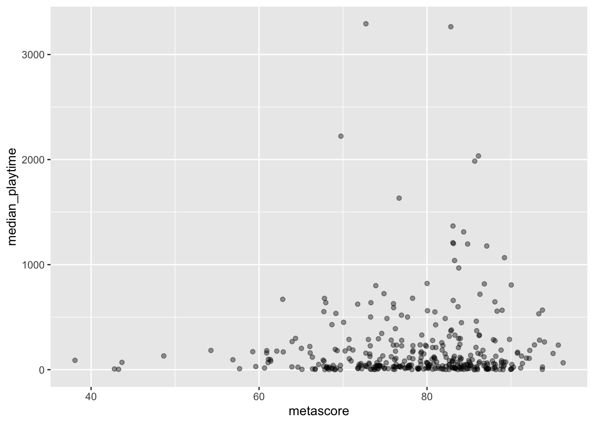
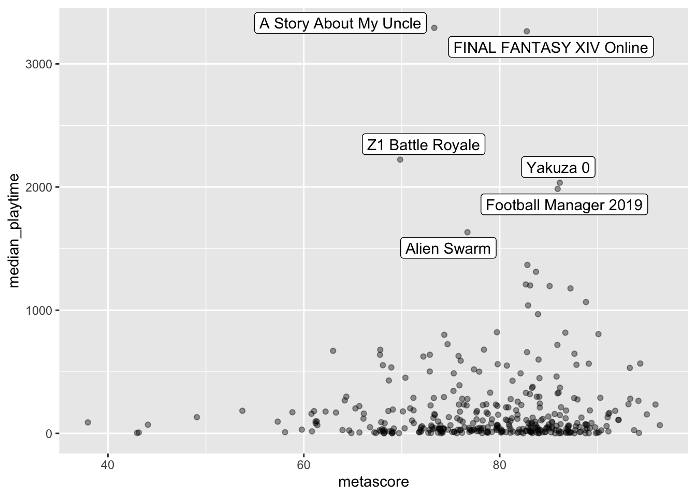

Chapter 7 R Basics
Goals:
- describe common classes for variables in a data set.
- explain why some
Rerrors come about from class misspecifications. - use indexing to reference rows, columns, or specific observations in a
tibbleor data set. - explain when you can and cannot use piping.
- describe what a server is, when you have to install packages, and what the benefit is of using
RProjects.
Motivation
Why is the chapter on R basics not the first chapter that we discuss? There certainly are advantages of doing things that way, but there are also advantages of not starting out with something like “classes of variables in R.”
First, it’s not the most inherently interesting thing to look at. It’s a lot more fun to make plots and wrangle data. As long as someone makes sure that the variables are already of the “correct” class, then there’s no need to talk about this.
Second, much of what we discuss here will make more sense, having the previous four chapters under our belt. We’ll be able to see how misspecified variable classes cause issues in certain summaries and plots and we already know how to make those plots and get those summaries.
7.1 Variable Classes in R
R has a few different classes that variables take, including numeric, factor, character Date, and logical. Before we delve into the specifics of what these classes mean, let’s try to make some plots to illustrate why we should care about what these classes mean.
The videogame_clean.csv file contains variables on video games from 2004 - 2019, including
game, the name of the gamerelease_date, the release date of the gamerelease_date2, a second coding of release dateprice, the price in dollars,owners, the number of owners (given in a range)median_playtime, the median playtime of the gamemetascore, the score from the website Metacriticprice_cat, 1 for Low (less than 10.00 dollars), 2 for Moderate (between 10 and 29.99 dollars), and 3 for High (30.00 or more dollars)meta_cat, Metacritic’s review system, with the following categories: “Overwhelming Dislike,” “Generally Unfavorable,” “Mixed Reviews,” “Generally Favorable,” “Universal Acclaim.”playtime_miss, whether median play time is missing (TRUE) or not (FALSE)
The data set was modified from https://github.com/rfordatascience/tidytuesday/tree/master/data/2019/2019-07-30.
Run the code in the following R chunk to read in the data.
library(tidyverse)
videogame_df <- read_csv("data/videogame_clean.csv")
head(videogame_df)## # A tibble: 6 x 15
## game release_date release_date2 price owners median_playtime metascore
## <chr> <chr> <date> <dbl> <chr> <dbl> <dbl>
## 1 Half-Life… Nov 16, 2004 2004-11-16 9.99 10,000,… 66 96
## 2 Counter-S… Nov 1, 2004 2004-11-01 9.99 10,000,… 128 88
## 3 Counter-S… Mar 1, 2004 2004-03-01 9.99 10,000,… 3 65
## 4 Half-Life… Nov 1, 2004 2004-11-01 4.99 5,000,0… 0 NA
## 5 Half-Life… Jun 1, 2004 2004-06-01 9.99 2,000,0… 0 NA
## 6 CS2D Dec 24, 2004 2004-12-24 NA 1,000,0… 10 NA
## # … with 8 more variables: price_cat <dbl>, meta_cat <chr>,
## # playtime_miss <lgl>, number <dbl>, developer <chr>, publisher <chr>,
## # average_playtime <dbl>, meta_cat_factor <chr>A data frame or tibble holds variables that are allowed to be different classes. If a variable is a different class than you would expect, you’ll get some strange errors or results when trying to wrangle the data or make graphics.
Run the following lines of code. In some cases, we are only using the first 100 observations in videogame_small. Otherwise, the code would take a very long time to run.
videogame_small <- videogame_df %>% slice(1:100)
ggplot(data = videogame_small, aes(x = release_date, y = price)) +
geom_point() ## Warning: Removed 5 rows containing missing values (geom_point).
ggplot(data = videogame_small, aes(x = release_date2, y = metascore)) +
geom_point(aes(colour = price_cat))## Warning: Removed 43 rows containing missing values (geom_point).
In the first plot, release_date isn’t ordered according to how you would expect (by date). Instead, R orders it alphabetically.
In the second plot, we would expect to get a plot with 3 different colours, one for each level of price_cat. Instead, we get a continuous colour scale, which doesn’t make sense, given that price_cat can only be 1, 2, or 3.
Both plots are not rendered correctly because the variable classes are not correct in the underlying data set. Up until this point, the data that has been provided has almost always had the correct variable classes, by default, but that won’t always be the case!
We’ve actually seen both of these issues before as well (the Date issue in the exercise data and the continuous colour scale in the cars data), but, in both of these instances, code was provided to “fix” the problem. After this section, you’ll have the tools to fix many class issues on your own!
If you examine the output of the following line of code
head(videogame_df)## # A tibble: 6 x 15
## game release_date release_date2 price owners median_playtime metascore
## <chr> <chr> <date> <dbl> <chr> <dbl> <dbl>
## 1 Half-Life… Nov 16, 2004 2004-11-16 9.99 10,000,… 66 96
## 2 Counter-S… Nov 1, 2004 2004-11-01 9.99 10,000,… 128 88
## 3 Counter-S… Mar 1, 2004 2004-03-01 9.99 10,000,… 3 65
## 4 Half-Life… Nov 1, 2004 2004-11-01 4.99 5,000,0… 0 NA
## 5 Half-Life… Jun 1, 2004 2004-06-01 9.99 2,000,0… 0 NA
## 6 CS2D Dec 24, 2004 2004-12-24 NA 1,000,0… 10 NA
## # … with 8 more variables: price_cat <dbl>, meta_cat <chr>,
## # playtime_miss <lgl>, number <dbl>, developer <chr>, publisher <chr>,
## # average_playtime <dbl>, meta_cat_factor <chr>you’ll see that, at the very top of the output, right below the variable names, R provides you with the classes of variables in the tibble.
<chr>is character, used for strings or text.<fct>is used for variables that are factors, typically used for character variables with a finite number of possible values the variable can take on.<date>is used for dates.<dbl>stands for double and is used for thenumericclass.<int>is for numbers that are all integers. In practice, there is not much difference between this class and classdbl.<lgl>is for logical, variables that are eitherTRUEorFALSE.
7.1.1 Referencing Variables and Using str()
We can use name_of_dataset$name_of_variable to look at a specific variable in a data set:
videogame_df$gameprints the first thousand entries of the variable game. There are a few ways to get the class of this variable: the way that we will use most often is with str(), which stands for “structure,” and gives the class of the variable, the number of observations (26688), as well as the first couple of observations:
str(videogame_df$game)## chr [1:26688] "Half-Life 2" "Counter-Strike: Source" ...You can also get a variable’s class more directly with class()
class(videogame_df$game)## [1] "character"7.2 Classes in Detail
The following gives summary information about each class of variables in R:
7.2.1 <chr> and <fct> Class
With the character class, R will give you a warning and/or a missing value if you try to perform any numerical operations:
mean(videogame_df$game)## Warning in mean.default(videogame_df$game): argument is not numeric or logical:
## returning NA## [1] NAvideogame_df %>% summarise(maxgame = max(game))## # A tibble: 1 x 1
## maxgame
## <chr>
## 1 <NA>You also can’t convert a character class to numeric. You can, however, convert a character class to a <fct> class, using as.factor(). The <fct> class will be useful when we discuss the forcats package, but isn’t particularly useful now.
class(videogame_df$meta_cat)## [1] "character"class(as.factor(videogame_df$meta_cat))## [1] "factor"In general, as._____ will lets you convert between classes. Note, however, that we aren’t saving our converted variable anywhere. If we wanted the conversion to the factor to be saved in the data set, we can use mutate():
videogame_df <- videogame_df %>%
mutate(meta_cat_factor = as.factor(meta_cat))
str(videogame_df$meta_cat_factor)## Factor w/ 4 levels "Generally Favorable",..: 4 1 3 NA NA NA 4 1 3 NA ...For most R functions, it won’t matter whether your variable is in class character or class factor. In general, though, character classes are for variables that have a ton of different levels, like the name of the videogame, whereas factors are reserved for categorical variables with a finite number of levels.
7.2.2 <date> Class
The <date> class is used for dates, and the <datetime> class is used for Dates with times. R requries a very specific format for dates and times. Note that, while to the human eye, both of the following variables contain dates, only one is of class <date>:
str(videogame_df$release_date)## chr [1:26688] "Nov 16, 2004" "Nov 1, 2004" "Mar 1, 2004" "Nov 1, 2004" ...str(videogame_df$release_date2)## Date[1:26688], format: "2004-11-16" "2004-11-01" "2004-03-01" "2004-11-01" "2004-06-01" ...release_date is class character, which is why we had the issue with the odd ordering of the dates earlier. You can try converting it using as.Date, but this function doesn’t always work:
as.Date(videogame_df$release_date)## Error in charToDate(x): character string is not in a standard unambiguous formatDates and times can be pretty complicated. In fact, we will spend an entire week covering them using the lubridate package.
On variables that are in Date format, like release_date2, we can use numerical operations:
median(videogame_df$release_date2, na.rm = TRUE)## [1] "2017-06-09"mean(videogame_df$release_date2, na.rm = TRUE)## [1] "2016-09-15"What do you think taking the median or taking the mean of a date class means?
7.2.3 <dbl> and <int> Class
Class <dbl> and <int> are probably the most self-explanatory classes. <dbl>, the numeric class, are just variables that have only numbers in them while <int> only have integers (…, -2, -1, 0, 1, 2, ….). You can do numerical operations on either of these classes (and we’ve been doing them throughout the semester). For our purposes, these two classes are interchangeable.
str(videogame_df$price)## num [1:26688] 9.99 9.99 9.99 4.99 9.99 ...Problems arise when numeric variables are coded as something non-numeric, or when non-numeric variables are coded as numeric. For example, examine:
str(videogame_df$price_cat)## num [1:26688] 1 1 1 1 1 NA 2 1 1 1 ...price_cat is categorical but is coded as 1 for cheap games, 2 for moderately priced games, and 3 for expensive games. Therefore, R thinks that the variable is numeric, when, it’s actually a factor.
str(as.factor(videogame_df$price_cat))## Factor w/ 3 levels "1","2","3": 1 1 1 1 1 NA 2 1 1 1 ...This is the cause of the odd colour scale that we encountered earlier and can be fixed by converting price_cat to a factor:
videogame_df <- videogame_df %>%
mutate(price_factor = as.factor(price_cat))
ggplot(data = videogame_df, aes(x = release_date2, y = metascore)) +
geom_point(aes(colour = price_factor))## Warning: Removed 23838 rows containing missing values (geom_point).
7.2.4 <lgl> Class
Finally, there is a class of variables called logical. These variables can only take 2 values: TRUE or FALSE. For example, playtime_miss, a variable for whether or not the median_playtime variable is missing or not, is logical:
str(videogame_df$playtime_miss)## logi [1:26688] FALSE FALSE FALSE TRUE TRUE FALSE ...It’s a little strange at first, but R can perform numeric operations on logical classes. All R does is treat every TRUE as a 1 and every FALSE as a 0. Therefore, sum() gives the total number of TRUEs and mean() gives the proportion of TRUEs. So, we can find the number and proportion of games that are missing their median_playtime as:
sum(videogame_df$playtime_miss)## [1] 25837mean(videogame_df$playtime_miss)## [1] 0.968113There’s a lot of games that are missing this information!
We’ve actually used the ideas of logical variables for quite some time now, particularly in statements involving if_else(), case_when(), filter(), and mutate().
The primary purpose of this section is to be able to identify variable classes and be able to convert between the different variable types with mutate() to “fix” variables with the incorrect class.
7.2.5 Exercises
Exercises marked with an * indicate that the exercise has a solution at the end of the chapter at 7.7.
We will use the fitness data set again for this set of exercises, as the data set has some of the issues with variable class that we have discussed. However, in week 1, some of the work of the work to fix those issues was already done before you saw the data. Now, you’ll get to fix a couple of those issues! Read in the data set with:
library(tidyverse)
fitness_df <- read_csv("data/higham_fitness_notclean.csv")What is the issue with the following plot? There’s no need to fix the plot (we’ll see how to fix it when we introduce the
lubridatepackage).* What is the issue with the following plot? After you figure out the issue, use
mutate()to create a new variable that fixes the issue and then reconstruct the graph.* What is a third variable in the data set that has an incorrect
class?Create a new variable, called
step_goalthat is1orTRUEif at least 10000 steps were walked and0orFALSEif fewer than 10000 steps were walked. Using this variable, find the total number of days where the goal was met and the proportion of the days where the goal was met.
7.3 Object Types and Subsetting
Variables of these different classes can be stored in a variety of different objects in R. We have almost exclusively used the tibble object type. The tidy tibble
- is “rectangular” and has a specific number of rows and columns.
- has columns that are variables
- each column must have elements that are of the same class, but different columns can be of different classes. This allows us to have character and numeric variables in the same
tibble.
7.3.1 tibble and data.frame
The tibble object is very similar to the data.frame object. You can also check what type of object you’re working with using the str() command:
str(videogame_df) ## look at the beginning to see "tibble"We will have a small section on tibbles in the coming weeks so we won’t focus on them here. But, we should take note that, to reference a specific element in a tibble, called indexing, you can use [# , #]. So, for example, videogame_df[5, 3] grabs the value in the fifth row and the third column:
videogame_df[5, 3]## # A tibble: 1 x 1
## release_date2
## <date>
## 1 2004-06-01More often, we’d want to grab an entire row (or range of rows) or an entire column. We can do this by leaving the row number blank (to grab the entire column) or by leaving the column number blank (to grab the entire row):
videogame_df[ ,3] ## grab the third column
videogame_df[5, ] ## grab the fifth rowWe can also grab a range of columns or rows using the : operator:
3:7
videogame_df[ ,3:7] ## grab columns 3 through 7
videogame_df[3:7, ] ## grab rows 3 through 7or we can grab different columns or rows using c():
videogame_df[ ,c(1, 3, 4)] ## grab columns 1, 3, and 4
videogame_df[c(1, 3, 4), ] ## grab rows 1, 3, and 4To get rid of an entire row or column, use -: videogame_df[ ,-c(1, 2)] drops the first and second columns while videogame_df[-c(1, 2), ] drops the first and second rows.
7.3.2 Vectors
A vector is an object that holds “things,” or elements, of the same class. You can create a vector in R using the c() function, which stands for “concatenate.” We’ve used the c() function before to bind things together; we just hadn’t yet discussed it in the context of creating a vector.
vec1 <- c(1, 3, 2)
vec2 <- c("b", 1, 2)
vec3 <- c(FALSE, FALSE, TRUE)
str(vec1); str(vec2); str(vec3)## num [1:3] 1 3 2## chr [1:3] "b" "1" "2"## logi [1:3] FALSE FALSE TRUENotice that vec2 is a character class. R requires all elements in a vector to be of one class; since R knows b can’t be numeric, it makes all of the numbers characters as well.
Using the dataset$variable draws out a vector from a tibble or data.frame:
videogame_df$metascoreIf you wanted to make the above vector “by hand,” you’d need to have a lot of patience: c(96, 88, 65, NA, NA, NA, 93, .........)
Just like tibbles, you can save vectors as something for later use:
metavec <- videogame_df$metascore
mean(metavec, na.rm = TRUE)## [1] 71.89544How would you get the mean metascore using dplyr functions?
Vectors are one-dimensional: if we want to grab the 100th element of a vector we just use name_of_vector[100]:
metavec[100] ## 100th element is missing## [1] NABe aware that, if you’re coming from a math perspective, a “vector” in R doesn’t correspond to a “vector” in mathematics or physics.
7.3.3 Lists
Lists are one of the more flexible objects in R: you can put objects of different classes in the same list and lists aren’t required to be rectangular (like tibbles are). Lists are extremely useful because of this flexibility, but, we won’t use them much in this class. Therefore, we will just see an example of a list before moving on:
testlist <- list("a", 4, c(1, 4, 2, 6),
tibble(x = c(1, 2), y = c(3, 2)))
testlist## [[1]]
## [1] "a"
##
## [[2]]
## [1] 4
##
## [[3]]
## [1] 1 4 2 6
##
## [[4]]
## # A tibble: 2 x 2
## x y
## <dbl> <dbl>
## 1 1 3
## 2 2 2testlist has four elements: a single character "a", a single number 4, a vector of 1, 4, 2, 6, and a tibble with a couple of variables. Lists can therefore be used to store complex information that wouldn’t be as easily stored in a vector or tibble.
7.3.4 Exercises
Exercises marked with an * indicate that the exercise has a solution at the end of the chapter at 7.7.
* Look at the subsetting commands with
[ , ]. Whatdplyrfunctions can you use to do the same thing?Create a
tibblecalledlast100that only has the last 100 days in the data set using both (1) indexing with[ , ]and (2) adplyrfunction.Create a tibble that doesn’t have the
flightsvariable using both (1) indexing with[ , ]and (2) adplyrfunction.* Use the following steps to create a new variable
weekend_ind, which will be “weekend” if the day of the week is Saturday or Sunday and “weekday” if the day of the week is any other day. The currentweekdayvariable is coded so that1represents Sunday,2represents Monday, …., and7represents Saturday.
Create a vector that has the numbers corresponding to the two weekend days. Name the vector and then create a second vector that has the numbers corresponding to the five weekday days.
Use
dplyrfunctions and the%in%operator to create the newweekend_indvariable. You can use the following code chunk to help with what%in%does:
1 %in% c(1, 2, 3, 4)
2 %in% c(1, 2, 3, 4)
2 %in% c(3, 4, 5, 6)7.4 Piping with magrittr
The pipe %>% is loaded automatically when the tidyverse library is loaded, but the operator comes from the magrittr package. We’ve been using the pipe quite a bit, but let’s delve a little deeper into what it’s actually doing.
Let’s say you want to filter() the data set to include only observations with a metascore that isn’t missing. We’ve been using:
videogame_df %>% filter(!is.na(metascore))What the pipe is doing is putting videogame_df as the first argument in the filter() function so that the piping statement in the chunk above is equivalent to:
filter(videogame_df, !is.na(metascore))If we want to first filter out games with a non-missing metascore, get rid of all observations with a median play time of 0, and then obtain the “median” median_playtime for each of the 3 price categories, we would typically use
videogame_df %>% filter(!is.na(metascore)) %>%
filter(median_playtime > 0) %>%
group_by(price_cat) %>%
summarise(avg_med_time = median(median_playtime, na.rm = TRUE))We see from the summary that, in general, games do tend to give you more “bang for the buck”: more expensive games tend to have a larger median play time. Consecutive pipes build on each other: we can slowly build out what the pipe is doing step-by-step. Starting from the top, videogame_df is the first argument in the filter(!is.na(metascore)) function:
filter(videogame_df, !is.na(metascore))filter(videogame_df, !is.na(metascore)) is the first argument in filter(median_playtime > 0):
filter(filter(videogame_df, !is.na(metascore)), median_playtime > 0)filter(filter(videogame_df, !is.na(metascore)), median_playtime > 0) is the first argument in group_by(price_cat):
group_by(filter(filter(videogame_df, !is.na(metascore)),
median_playtime > 0),
price_cat)and group_by(filter(filter(videogame_df, !is.na(metascore)), median_playtime > 0), price_cat) is the first argument of summarise(avg_med_time = median(median_playtime, na.rm = TRUE)):
summarise(group_by(filter(filter(videogame_df, !is.na(metascore)),
median_playtime > 0), price_cat),
avg_med_time = median(median_playtime, na.rm = TRUE))and we obtain the same result without the %>% pipe. The example shows that, for our purposes, the pipe is most useful in aiding the readability of our code. It’s a lot easier to see what’s happening in the code chunk with the pipes than it is in the previous code chunk without the pipe.
7.4.1 When You Can’t Use the Pipe
So, the pipe is a convenient way to put what precedes the pipe as the first argument to the function that follows the pipe. It’s important to understand this as you learn more about R because, while the functions in tidyverse are purposefully made to make good use of the pipe, not all functions in R utilize the pipe. Most of the functions in the tidyverse have a first argument that is a data set (which is why we can use pipes consecutively), but this isn’t the case with all R functions.
For example, if you have taken STAT 213, you’ve used lm() to fit many different types of linear models. If you haven’t taken STAT 213, lm(response ~ explanatory) stands for “linear model” and can be used to fit the simple linear regression model that you learned about in STAT 113. You might expect something like this to work:
videogame_df %>% lm(metascore ~ price)## Error in as.data.frame.default(data): cannot coerce class '"formula"' to a data.frameBut it throws us an error. Typing in ?lm reveals that its first argument is a formula to fit the model, not a data set. So the function is trying to run
lm(videogame_df, metascore ~ price)## Error in as.data.frame.default(data): cannot coerce class '"formula"' to a data.framewhich doesn’t work because the arguments to the function are mixed up (the formula should appear first and the data set should appear second).
7.4.2 Exercises
Exercises marked with an * indicate that the exercise has a solution at the end of the chapter at 7.7.
- * Recode the following to look cleaner by using the pipe
%>%:
summarise(group_by(filter(fitness_df, weekday == 1 | weekday == 7),
month),
meanweekend = mean(distance, na.rm = TRUE)) ## # A tibble: 12 x 2
## month meanweekend
## * <dbl> <dbl>
## 1 1 3.96
## 2 2 4.94
## 3 3 5.15
## 4 4 5.48
## 5 5 4.96
## 6 6 3.78
## 7 7 5.81
## 8 8 5.59
## 9 9 4.62
## 10 10 3.98
## 11 11 2.86
## 12 12 3.55- Explain why the following code gives a warning message and returns
NA. Use the list of Arguments in?meanin your explanation.
fitness_df %>% mean(distance, na.rm = TRUE)## Warning in mean.default(., distance, na.rm = TRUE): argument is not numeric or
## logical: returning NA## [1] NA7.5 R Cleanup: Other Topics
7.5.1 R Projects and Working Directories
R Projects are a convenient way to keep related code, data sets, and analyses together. Read this very short introduction in R for Data Science here: https://r4ds.had.co.nz/workflow-projects.html#paths-and-directories and https://r4ds.had.co.nz/workflow-projects.html#rstudio-projects.
Why should you rarely use an absolute directory?
Look at the top of your bottom-left terminal window. If you’ve made an R project (which you should have!), you should see that a file path that is the current folder you’re working in. This is where R Studio will look for files by default. So,
fitness_df <- read_csv("data/higham_fitness_notclean.csv")## Parsed with column specification:
## cols(
## Start = col_character(),
## month = col_double(),
## weekday = col_double(),
## dayofyear = col_double(),
## distance = col_double(),
## steps = col_double(),
## flights = col_double(),
## active_cals = col_double()
## )starts at the path given in the console, looks for a folder called data in that path and looks for a file called higham_fitness_notclean.csv in the data folder.
If you zipped up your project and sent it to someone else, they’d be able to open it and read that data file without needing to change any directory code!
7.5.2 R Studio Server
The R Studio server is a computer that is set-up to carry out any R-based analyses for students with remote access to the computer (in our case, through SLU Login credentials). It might be helpful to think about the server as a large machine with no keyboard and no screen: it’s only purpose is to execute the code.
R and R Studio are completely free, so you can install both on most computers (not Chromebooks though). The R Studio server has a couple of advantages, particularly for a classroom or workshop setting:
using the server ensures that we are all using the same version of
R. In theory, if one person gets an error, then everyone should get that same error.installing
RandR Studioon your personal device is much easier after you’ve had some experience using it through the server.you don’t need a computer that is capable of running
Rto use the server (you can use a tablet or a Chromebook since the server does all of the actual computation).
This week, however, we will move away from the server and, if you have a device that can install R (pretty much any computer that isn’t a Chromebook), you will install R on your own device. Though the server does have some advantages, there are also some disadvantages:
you won’t have your SLU login forever, so, if you wanted to use
Rpost graduation, you’d need to know how to install it.you haven’t had experience installing
Rpackages. This is quite easy to do, but I’ve installed all necessaryRpackages on the server for us so you haven’t had to worry about this step.the server requires good Internet access and also has the potential to crash.
7.5.3 Installing R Packages
So far, either myself or one of the other statistics faculty members have installed all packages that we’ve needed to use on the server globally. These packages include tidyverse, ggthemes, and ggrepel. However, if you want to use a package that isn’t installed on the server, or, you want to use a package using R Studio on your own personal computer, you need to install it first.
Installation only needs to happen once (or until you upgrade R, which usually doesn’t happen too often), whereas the package needs to be loaded with library() every time you open R. The analogy of a lightbulb might be helpful. You only need to screw in the lightbulb into a socket once, but, every time you want the lightbulb to provide light, you need to flip the light switch.
In the lightbulb analogy, what does putting the lightbulb into the socket correspond to? What does flipping the light switch correspond to?
When you have R on your own computer, you’ll need to install all packages that you want to use (but, remember that you just need to install each package once).
7.5.4 Exercises
Exercises marked with an * indicate that the exercise has a solution at the end of the chapter at 7.7.
* Click the “Packages” button in the lower-right hand windown to bring up the packages menu. Instead of using
library(name_of_package), you can click the checkbox by the package name to load it intoR. Try it out by un-checking and then re-checkingtidyverse. Explain, from a reproducibility perspective, why loading packages this way is not good practice.Occasionally, something odd will happen in your
Rsession where a “turn it off and turn it back on” strategy is the best fix. Save your current file, and restartRby clicking Session -> Restart R.We’ve seen how
R Projectsare useful for keeping a data analysis organized. For large-scale data analysis projects, it’s usually nice to have a a specific folder for “data” within theR Projectfolder. Thus far, we have used a data folder, but you could also put a data set in the same directory as anR Project. Move the fitness data set out of the data folder and into the folder of your currentR Project. To do so, click the checkbox next to the video games data set and the fitness data set, click “More” -> Move and select the main folder.Now that your data set is in a different spot, you’ll need to let
Rknow as well in yourread_csv()statements! To do so, simply remove thedata/before the name of the file in yourread_csv()statement in this current .Rmd file for any statement involving the fitness data.
7.6 Chapter Exercises
Exercises marked with an * indicate that the exercise has a solution at the end of the chapter at 7.7.
In class, we will work on installing R and R Studio to your personal laptop. If you already have R and R Studio installed and you have all of the basic packages working (from having STAT 213 in the Covid Spring 2020 or from some other class), then you can come to class ~ 30 minutes late (though you’re also welcome to come on time and work on other things for the first 45 minutes). If you’re unsure about whether your device can install R or R Studio, shoot me an email. It probably can, unless it’s a Chromebook.
Step 1. Installing R: https://cran.rstudio.com/ and choose the appropriate version. Go through all of the installation steps.
Step 2. This isn’t necessary, but it’s interesting to see what the basic R interface looks like without R Studio. Open up R and you should pretty much just see something that resembles the lower-left window of R Studio.
Step 3. Installing R Studio: https://rstudio.com/products/rstudio/download/. Choose the free version and then choose either the Mac version or Windows version (assuming you don’t have Linux). Go through all of the installation steps.
Step 4a. Open R Studio. Recall that one thing that we did on the server was change an R Markdown option so that results and plots wouldn’t appear in-line. To change this, click R Studio -> Preferences -> R Markdown and then uncheck “Show output inline for all R Markdown documents.”
Step 4b. Change your colour theme! This is fun, at least for me….Go to R Studio -> Preferences -> Appearance and choose a theme that you like. I’ve had mine on Cobalt for a really long time, but the Vibrant Ink theme is always there, tempting me.
Step 5. If you want your STAT 234 materials off of the server (which you should!), then you’ll need to download them to your personal device. Click the checkbox next to the STAT 234 folder, and then click More -> Export -> Download. There should now be a zipped folder of your materials in your Downloads folder. Double click to unzip the folder and then move the STAT 234 folder to a place that’s convenient for you (since you’ll be using it a lot this semester, one place you could put it is your Desktop).
Verify that the contents downloaded by opening up the Week5_R_Basics R Project by double clicking the R Project icon in the Week5 folder.
Step 6. There’s a lot of packages that we’ve used that were already installed on the server. By far, the largest package (and the one that’s most likely to give you an error in installation) is the tidyverse package. Install this package using
install.packages("tidyverse")Step 7. Open your Week4 Project in a new window and verify that your .Rmd files can knit (you’ll at least need to install ggthemes and ggrepel and possibly a couple of other packages that I’m not thinking of).
Once R is installed and ready to go, work through the following exercises pertaining to the video game data set.
- * Read in the data set and use
filter()to remove any rows with missing metascores, missing median playtime, or have a median playtime of 0 hours.
Note: We usually don’t want to remove missing values without a valid reason. In this case, a missing metascore means that the game wasn’t “major” enough to get enough critic reviews, and a missing or 0 hour median playtime means that there weren’t enough users who uploaded their playtime to the database. Therefore, any further analyses are constructed to games that are popular enough to both get enough reviews on metacritic and have enough users upload their median playtimes.
videogame_df <- read_csv("data/videogame_clean.csv")* Make a scatterplot with
median_playtimeon the y-axis andmetascoreon the x-axis with the filtered data set.* Something you may notice is that many of the points directly overlap one another. This is common when at least one of the variables on a scatterplot is discrete:
metascorecan only take on integer values in this case. Changegeom_point()in your previous plot togeom_jitter(). Then, use the help to write a sentence about whatgeom_jitter()does.* Another option is to control point transparency with
alpha. In yourgeom_jitter()statement, changealphaso that you can still see all of the points, but so that you can tell in the plot where a lot of points are overlapping.* Label the points that have median playtimes above 1500 hours. You may want to use the
ggrepelpackage so that the labels don’t overlap.Choose one of the games that got labeled and Google that game’s median, or possibly average, play time. Is it in the vicinity as the
median_playtimerecorded in our data set?What should be done about the outliers? We will discuss and investigate this issue as a class.
7.7 Exercise Solutions
7.7.1 Variable Classes S
7.7.2 Classes in Detail S
- * What is the issue with the following plot? After you figure out the issue, use
mutate()to create a new variable that fixes the issue and then reconstruct the graph.
The issue is that weekday should be a factor, not numeric.
fitness_df <- fitness_df %>% mutate(weekday_cat = as.factor(weekday))
ggplot(data = fitness_df, aes(x = active_cals)) +
geom_freqpoly(aes(group = weekday_cat, colour = weekday_cat)) +
scale_colour_viridis_d()## `stat_bin()` using `bins = 30`. Pick better value with `binwidth`.
- * What is a third variable in the data set that has an incorrect
class?
Month should be an ordered factor, not numeric.
7.7.3 Object Types S
- * Look at the subsetting commands with
[ , ]. Whatdplyrfunctions can you use to do the same thing?
slice() can be used for the row indexing while select() can be used for the column indexing.
- * Use the following steps to create a new variable
weekend_ind, which will be “weekend” if the day of the week is Saturday or Sunday and “weekday” if the day of the week is any other day. The currentweekdayvariable is coded so that1represents Sunday,2represents Monday, …., and7represents Saturday.
- Create a vector that has the numbers corresponding to the two weekend days. Name the vector and then create a second vector that has the numbers corresponding to the five weekday days.
vecweekend <- c(1, 7)
vecweekday <- 2:6 ## or c(2, 3, 4, 5, 6)- Use
dplyrfunctions and the%in%operator to create the newweekend_indvariable. You can use the following code chunk to help with what%in%does:
1 %in% c(1, 2, 3, 4)## [1] TRUE2 %in% c(1, 2, 3, 4)## [1] TRUE2 %in% c(3, 4, 5, 6)## [1] FALSEfitness_df %>%
mutate(weekend_ind = case_when(weekday %in% vecweekend ~ "weekend",
weekday %in% vecweekday ~ "weekday")) %>%
select(weekend_ind, everything())## # A tibble: 584 x 10
## weekend_ind Start month weekday dayofyear distance steps flights active_cals
## <chr> <chr> <dbl> <dbl> <dbl> <dbl> <dbl> <dbl> <dbl>
## 1 weekday 11/2… 11 4 332 0.930 1885. 0 57.8
## 2 weekday 11/2… 11 5 333 4.64 8953. 18 509.
## 3 weekday 11/3… 11 6 334 6.05 11665 12 599.
## 4 weekend 12/1… 12 7 335 6.80 12117 6 661.
## 5 weekend 12/2… 12 1 336 4.61 8925. 1 527.
## 6 weekday 12/3… 12 2 337 3.96 7205 2 550.
## 7 weekday 12/4… 12 3 338 6.60 12483. 5 670.
## 8 weekday 12/5… 12 4 339 4.91 9258. 6 557.
## 9 weekday 12/6… 12 5 340 7.50 14208 13 997.
## 10 weekday 12/7… 12 6 341 4.27 8269. 8 533.
## # … with 574 more rows, and 1 more variable: weekday_cat <fct>## can also use if_else, which is actually a little simpler in this case:
fitness_df %>% mutate(weekend_ind = if_else(weekday %in% vecweekend,
true = "weekend", false = "weekday")) %>%
select(weekend_ind, everything())## # A tibble: 584 x 10
## weekend_ind Start month weekday dayofyear distance steps flights active_cals
## <chr> <chr> <dbl> <dbl> <dbl> <dbl> <dbl> <dbl> <dbl>
## 1 weekday 11/2… 11 4 332 0.930 1885. 0 57.8
## 2 weekday 11/2… 11 5 333 4.64 8953. 18 509.
## 3 weekday 11/3… 11 6 334 6.05 11665 12 599.
## 4 weekend 12/1… 12 7 335 6.80 12117 6 661.
## 5 weekend 12/2… 12 1 336 4.61 8925. 1 527.
## 6 weekday 12/3… 12 2 337 3.96 7205 2 550.
## 7 weekday 12/4… 12 3 338 6.60 12483. 5 670.
## 8 weekday 12/5… 12 4 339 4.91 9258. 6 557.
## 9 weekday 12/6… 12 5 340 7.50 14208 13 997.
## 10 weekday 12/7… 12 6 341 4.27 8269. 8 533.
## # … with 574 more rows, and 1 more variable: weekday_cat <fct>7.7.4 Piping S
- * Recode the following to look cleaner by using the pipe
%>%:
summarise(group_by(filter(fitness_df, weekday == 1 | weekday == 7),
month),
meanweekend = mean(distance, na.rm = TRUE)) ## # A tibble: 12 x 2
## month meanweekend
## * <dbl> <dbl>
## 1 1 3.96
## 2 2 4.94
## 3 3 5.15
## 4 4 5.48
## 5 5 4.96
## 6 6 3.78
## 7 7 5.81
## 8 8 5.59
## 9 9 4.62
## 10 10 3.98
## 11 11 2.86
## 12 12 3.55fitness_df %>% filter(weekday == 1 | weekday == 7) %>%
group_by(month) %>%
summarise(meanweekend = mean(distance, na.rm = TRUE)) ## # A tibble: 12 x 2
## month meanweekend
## * <dbl> <dbl>
## 1 1 3.96
## 2 2 4.94
## 3 3 5.15
## 4 4 5.48
## 5 5 4.96
## 6 6 3.78
## 7 7 5.81
## 8 8 5.59
## 9 9 4.62
## 10 10 3.98
## 11 11 2.86
## 12 12 3.557.7.5 Other R Topics S
- * Click the “Packages” button in the lower-right hand windown to bring up the packages menu. Instead of using
library(name_of_package), you can click the checkbox by the package name to load it intoR. Try it out by un-checking and then re-checkingtidyverse. Explain, from a reproducibility perspective, why loading packages this way is not good practice.
If I loaded a package by checking the box, did some analysis, and gave my code to someone else, that person couldn’t easily see which packages I loaded in. Therefore, they wouldn’t necessarily be able to reproduce my results exactly.
7.7.6 Chapter Exercises 6 S
- * Read in the data set and use
filter()to remove any rows with missing metascores, missing median playtime, or have a median playtime of 0 hours.
Note: We usually don’t want to remove missing values without a valid reason. In this case, a missing metascore means that the game wasn’t “major” enough to get enough critic reviews, and a missing or 0 hour median playtime means that there weren’t enough users who uploaded their playtime to the database. Therefore, any further analyses are constructed to games that are popular enough to both get enough reviews on metacritic and have enough users upload their median playtimes.
videogame_df <- read_csv("data/videogame_clean.csv")videogame_nomiss <- videogame_df %>%
filter(!is.na(median_playtime) &
!is.na(metascore) &
median_playtime != 0)- * Make a scatterplot with
median_playtimeon the y-axis andmetascoreon the x-axis with the filtered data set.
ggplot(data = videogame_nomiss, aes(x = metascore,
y = median_playtime)) +
geom_point()
- * Something you may notice is that many of the points directly overlap one another. This is common when at least one of the variables on a scatterplot is discrete:
metascorecan only take on integer values in this case. Changegeom_point()in your previous plot togeom_jitter(). Then, use the help to write a sentence about whatgeom_jitter()does.
ggplot(data = videogame_nomiss, aes(x = metascore,
y = median_playtime)) +
geom_jitter()
geom_jitter() adds a small amount of “noise” to each data point so that points don’t overlap quite as much.
- * Another option is to control point transparency with
alpha. In yourgeom_jitter()statement, changealphaso that you can still see all of the points, but so that you can tell in the plot where a lot of points are overlapping.
ggplot(data = videogame_nomiss, aes(x = metascore,
y = median_playtime)) +
geom_jitter(alpha = 0.4)
## can see a lot of ponits have median playtimes close to 0- * Label the points that have median playtimes above 1500 hours. You may want to use the
ggrepelpackage so that the labels don’t overlap.
library(ggrepel)
videogame_long <- videogame_nomiss %>% filter(median_playtime > 1500)
ggplot(data = videogame_nomiss,
aes(x = metascore, y = median_playtime)) +
geom_jitter(alpha = 0.4) +
geom_label_repel(data = videogame_long, aes(label = game))